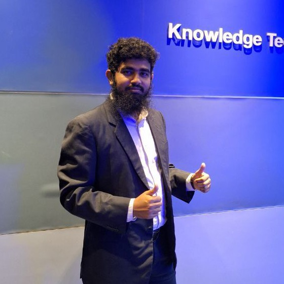

🔬
MoS₂ thin-film synthesis
Sulfurization of molybdenum films. I study how temperature, chamber pressure and time shape crystallinity, defects and electronic properties.
Researcher · R&D Engineer
I engineer next-generation thin-film solar cells. My work on MoS₂ and CZTS lifted simulated cell efficiency from 8.42% to 11.43%, and I turn lab data into clean, sustainable energy.

I'm a researcher and R&D engineer focused on thin-film photovoltaics and 2D materials. I recently completed my MSc in Electronic Engineering at Universiti Tenaga Nasional (UNITEN), Malaysia, where I worked as a full-time Research Assistant at the Institute of Sustainable Energy.
I combine hands-on fabrication and characterisation with device-level simulation, so ideas move from the model to the lab and back with evidence at every step.
I'm looking for R&D engineering roles in industry and academia where I can contribute to measurable results and keep learning.
Using SCAPS-1D modelling, a p-type MoS₂ interlayer improved the open-circuit voltage from 0.569 V to 0.665 V and the fill factor from 64.76% to 73.07%. The baseline device rose from 8.42% to 11.43% efficiency.
Read the paper →Sulfurization of molybdenum films. I study how temperature, chamber pressure and time shape crystallinity, defects and electronic properties.
Device-level modelling in SCAPS-1D to see how MoS₂ interlayers and defects change carrier transport and photovoltaic performance.
Research on energy-harvesting bicycle lanes for Kuala Lumpur, a smart-city project funded under the NSF and U.S. State Department programme.
Institute of Sustainable Energy (ISE), Universiti Tenaga Nasional (UNITEN), Malaysia
Monash University Malaysia · NSF / U.S. State Department project, Kuala Lumpur
Universiti Tenaga Nasional (UNITEN), Malaysia
Major: Electronics and Materials Engineering · Minor: Electrical
North Western University (NWU), Khulna
Major: Electrical Power and Mathematics · Minor: Electronics, Chemistry
Open to R&D engineering roles, research collaborations and PhD opportunities in solar energy and thin-film materials.
saifsaifulislam765@gmail.com · mdsaiful@uniten.edu.my